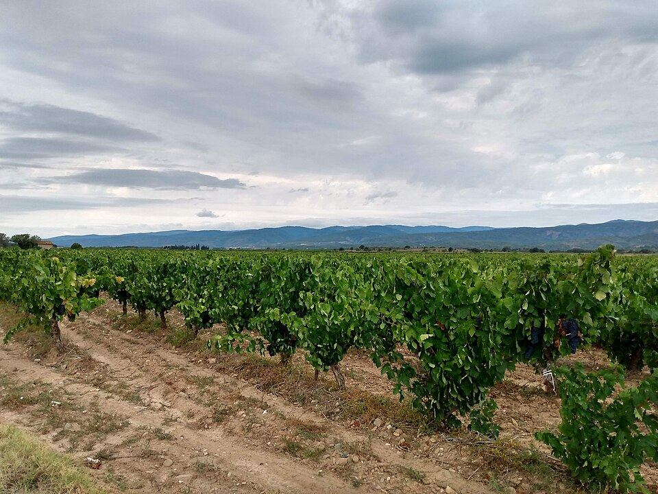

Newsletter mensuelle · Capendu
Ce qui se passe à Capendu, de la cave à la salle des fêtes.
La vie de tous les jours à Capendu, chaque mois dans votre boîte mail : sorties, sport, associations, bonnes affaires des commerçants. Libre, gratuite et indépendante.
Commerçants · artisans · associations · clubs
Faites connaître votre activité, gratuitement
Une vitrine gratuite pour promouvoir le village : vos événements, vos tarifs promotionnels, votre actualité et le retour sur vos événements passés. Réservée aux entreprises et associations dont le siège social est à Capendu, et aux associations voisines dont l'activité se déroule à Capendu. Avec une fiche dans la liste des partenaires (logo, adresse, téléphone), le suivi des clics et un assistant IA pour rédiger et organiser vos publications.
Les vignes de l'Aude en images

Photos d'illustration : vignobles de l'Aude et du Languedoc. Crédits
Dans chaque numéro
Tout ce qui fait la vie de la commune, écrit simplement. Que vous ayez 25 ou 85 ans, vous y trouvez ce qui vous concerne.
- Offre
Bonnes affaires
Promotions, nouveautés et offres commerciales des commerçants et artisans de Capendu. Elles sont toujours signalées « Offre ».
- Sport
Actualité sportive
Matchs, résultats, tournois, inscriptions dans les clubs, pour les petits comme pour les grands.
- Associations
Vie associative
Rendez-vous, vide-greniers, repas, appels à bénévoles : de quoi remplir les agendas et les salles.
- Sorties
Fêtes et loisirs
Concerts, marchés, balades, animations : les idées de sorties du mois, en famille ou entre amis.
- Retour
Retour sur les événements
Photos et comptes rendus des événements passés : un souvenir pour ceux qui y étaient, une envie pour les autres.
- Au quotidien
Infos pratiques
Horaires, ouvertures, nouveaux services et bonnes adresses. Les informations officielles restent celles de la mairie.
Indépendante et bénévole. Capendu en bref est éditée par Jérôme BOUBA, bénévolement, parce qu'il aime son village, ses associations et ses entreprises. Ce n'est pas un support officiel de la mairie de Capendu, et elle n'est affiliée à aucun parti ni à aucune institution.
Pensée pour tous
Simple à lire
Des textes courts, de gros caractères, des phrases claires. Lisible sur téléphone, tablette ou ordinateur.
Un rendez-vous par mois
Une newsletter mensuelle, jamais plus, avec un sommaire en haut pour aller droit à ce qui vous intéresse.
Un coup de main si besoin
Pas à l'aise avec l'informatique ? Nos partenaires locaux, commerçants et associations, vous aident à vous inscrire.
Comment ça marche
Je m'inscris
Une adresse e-mail suffit. Le prénom et le profil sont facultatifs.
Je confirme
Je clique sur le lien reçu par e-mail. Sans clic, rien n'est enregistré.
Je reçois la lettre
Une newsletter mensuelle, en début de mois. Chaque numéro contient un lien pour se désinscrire en un clic.
Nos partenaires, près de chez vous
Les entreprises et associations de Capendu qui partagent leurs événements, leurs offres et leur actualité. Certaines peuvent aussi vous aider à vous inscrire à la newsletter, sur place : pas d'ordinateur, pas à l'aise avec les e-mails ? Passez les voir.
Voir la liste des partenaires Devenir partenaire
Votre inscription reste personnelle : vous restez maître de vos données et vous devez confirmer vous-même par e-mail. Le partenaire ne conserve rien. En savoir plus
Vous êtes commerçant ou association ?
Offre commerciale, match, repas d'association, nouveau service : les entreprises et associations dont le siège social est à Capendu, ou les associations voisines actives à Capendu, s'inscrivent (inscription validée par l'éditeur), puis déposent leurs annonces avec le formulaire, aidées d'un assistant IA. Publication gratuite dans le prochain numéro.
Devenir partenaire Espace partenaire
Tout passe par des formulaires (pas d'e-mail). Déposez votre annonce avant le 25 de chaque mois pour paraître le mois suivant. Une question ? Utilisez le formulaire de contact.
Nos règles éditoriales
- Contenus locaux, utiles aux habitants de Capendu et des environs.
- Offres commerciales bienvenues, à condition d'être claires (prix, dates, conditions) et locales. Elles sont signalées « Offre ».
- Publication gratuite, sans contrepartie. Nous ne vendons pas de publicité.
- Des textes courts (environ 600 caractères) et simples, avec si possible une photo.
- Pas de contenu partisan, discriminatoire, ni de propos illicites.
- Vous garantissez avoir les droits sur vos textes et vos images.
- Pour toute photo où des personnes sont reconnaissables, vous avez leur accord.
- La rédaction peut reformuler, raccourcir ou refuser un contenu.
Vos données en bref
- Peu de données. Une adresse e-mail suffit.
- Votre accord d'abord. Case à cocher et e-mail de confirmation.
- Jamais revendues. Utilisées uniquement pour envoyer la lettre.
- Sortie en un clic. Dans chaque numéro, et suppression sur simple demande.
- Aucun cookie, aucun traceur sur ce site.
Politique de confidentialité
Dernière mise à jour : 15 octobre 2026
1. Qui est responsable de vos données ?
Le responsable du traitement est Jérôme BOUBA, éditeur bénévole de Capendu en bref, à titre personnel. Pour toute question relative à vos données, utilisez le formulaire de contact : Capendu en bref n'échange pas par e-mail.
2. Pourquoi collectons-nous vos données ?
Une seule finalité : vous envoyer la newsletter locale Capendu en bref, qui peut contenir l'actualité du village, sportive et associative, des informations pratiques et des offres commerciales de commerçants et d'artisans de la commune. Ces offres sont présentées à tous les abonnés de la même façon et signalées « Offre » : les commerçants ne reçoivent pas vos coordonnées et ne vous écrivent pas directement. Vos données ne servent ni à de la publicité ciblée, ni au profilage, ni à aucune autre communication.
3. Sur quelle base légale ?
Votre consentement (article 6.1.a du RGPD), donné en cochant la case du formulaire puis en cliquant sur le lien de confirmation reçu par e-mail (« double opt-in »). Vous pouvez le retirer à tout moment, aussi simplement que vous l'avez donné.
4. Quelles données exactement ?
| Donnée | Caractère | Utilité |
|---|---|---|
| Adresse e-mail | Obligatoire | Envoyer la newsletter |
| Prénom | Facultatif | Personnaliser le message |
| Profil (habitant, commerçant, association…) | Facultatif | Mieux adapter les contenus |
| Date, heure et adresse IP du consentement | Automatique | Prouver que vous avez consenti |
| Ouvertures et clics sur la newsletter | Automatique | Savoir si la lettre est lue, et supprimer les contacts inactifs |
Nous ne collectons aucune donnée sensible.
5. Combien de temps les conservons-nous ?
- Tant que vous restez abonné(e).
- Votre adresse est supprimée dès votre désinscription ou votre demande, ou après 3 ans sans aucune interaction (ni ouverture, ni clic).
- La preuve de votre consentement est conservée de façon restreinte pendant la durée de prescription légale applicable.
6. Qui reçoit vos données ?
Uniquement l'éditeur et notre prestataire d'envoi, Brevo (Sendinblue SAS, société française), qui agit comme sous-traitant selon un contrat conforme à l'article 28 du RGPD. Vos données ne sont ni vendues, ni louées, ni cédées à des tiers, y compris aux commerçants et aux associations dont les annonces figurent dans la lettre. Ceux-ci ne voient jamais la liste des abonnés.
6 bis. Aide à l'inscription par un partenaire local
Si vous le souhaitez, un commerçant ou une association partenaire peut vous aider à remplir le formulaire, à votre demande et en votre présence. Il ne fait que saisir les informations que vous lui indiquez : il ne les conserve pas, ne les note nulle part et ne les utilise pas pour autre chose. Votre consentement reste personnel et l'inscription n'est valide qu'après votre clic sur le lien reçu par e-mail.
7. Quels sont vos droits ?
Vous pouvez à tout moment : accéder à vos données, les rectifier, les faire effacer, vous opposer à leur traitement, en demander la limitation, les récupérer (portabilité) et retirer votre consentement. Utilisez le formulaire de contact (sujet « Mes données personnelles ») : je réponds sous un mois, à l'aide des coordonnées que vous indiquez. Indiquez l'adresse e-mail de votre inscription pour que je retrouve votre dossier. Vous pouvez aussi vous désinscrire en un clic grâce au lien présent en bas de chaque numéro.
Si vous estimez que vos droits ne sont pas respectés, vous pouvez déposer une réclamation auprès de la CNIL : cnil.fr/fr/plaintes.
8. Cookies et traceurs
Ce site n'utilise aucun cookie pour les visiteurs et aucun outil de publicité ni de suivi par un service tiers. Le site compte seulement, de façon anonyme et sans cookie, le nombre de visites par jour, la provenance générale (Facebook, moteur de recherche, newsletter, autre site) et le passage des robots des moteurs et des IA : aucune adresse IP n'est conservée, une empreinte temporaire sert uniquement à ne pas compter deux fois le même visiteur dans la journée et est effacée le lendemain. Seul l'espace partenaire dépose un cookie technique de session après connexion (voir le point 10). Les polices de caractères sont hébergées sur le site lui-même : aucune requête n'est envoyée à des services tiers lors de la consultation de cette page. Aucun bandeau de consentement n'est donc nécessaire. Comme tout hébergeur, Hostinger enregistre dans ses journaux techniques l'adresse IP des visiteurs, pour la sécurité et le bon fonctionnement du serveur, selon sa propre politique de confidentialité.
9. Mineurs
La newsletter s'adresse aux personnes de 15 ans et plus. En dessous de cet âge, l'inscription requiert l'accord d'un parent ou d'un titulaire de l'autorité parentale.
10. Inscription des entreprises et associations, et annonces
Le dépôt d'annonces est réservé aux entreprises et associations dont le siège social est à Capendu, ainsi qu'aux associations voisines dont l'activité se déroule sur la commune de Capendu. Pour s'inscrire, nous collectons : le nom de l'organisation, l'adresse de son siège social et son téléphone (publiés dans la liste des partenaires, avec son logo s'il est fourni), le lieu de son activité à Capendu pour une association voisine (publié), ainsi que le nom, l'adresse e-mail et, facultativement, le téléphone personnel de la personne qui la représente (non publiés). Aucun numéro d'immatriculation n'est demandé.
Ces informations servent à examiner l'inscription, à vous donner accès à votre espace partenaire et à échanger au sujet de vos annonces. Seuls le nom, le logo, l'adresse du siège, le téléphone et, le cas échéant, le lieu d'activité de l'organisation sont publiés, avec votre autorisation donnée en cochant la case prévue, sur la liste des partenaires ; vous pouvez les modifier ou les retirer à tout moment depuis votre espace partenaire. Les coordonnées personnelles restent privées, sauf le contact que vous demandez expressément de faire figurer dans une annonce. Base légale : votre consentement, donné en cochant les cases du formulaire.
Validation. L'éditeur valide chaque inscription au vu des informations fournies (siège social à Capendu, ou activité sur la commune pour une association voisine). Aucune donnée n'est transmise à un service extérieur pour cette vérification.
Photos et logos. Si vous joignez une photo à une annonce ou un logo à votre fiche, l'image est redimensionnée et ses métadonnées (lieu, appareil) sont supprimées. Une photo reste privée tant que l'annonce n'est pas validée, puis elle est publiée avec l'annonce ; un logo est publié une fois l'inscription validée. Vous garantissez détenir les droits et l'accord des personnes reconnaissables.
Durées. Inscription refusée : supprimée après 30 jours. Inscription en attente : supprimée après 90 jours. Inscription validée : conservée tant que vous êtes actif, puis supprimée après 24 mois sans aucune activité. Annonces refusées : supprimées après 30 jours ; en attente : 90 jours ; les autres : au plus tard 12 mois après le dépôt. Vous pouvez supprimer votre inscription et toutes vos annonces à tout moment depuis votre espace partenaire.
Assistants d'écriture (intelligence artificielle). Le formulaire de dépôt propose un assistant qui fonctionne par copier-coller : il prépare une demande que vous collez dans l'assistant IA de votre choix (par exemple Claude ou ChatGPT) et la réponse se remplit ensuite dans le formulaire, dans votre navigateur. Ce site n'envoie aucune donnée à un service d'IA : ce que vous collez dans votre assistant est soumis aux règles de ce service, c'est pourquoi nous vous demandons de n'y mettre aucune donnée personnelle. De son côté, l'éditeur peut relire et reformuler le texte des annonces validées avec un assistant d'écriture, toujours par copier-coller : seuls les textes publics des annonces (titre, description, lieu, date) lui sont transmis, jamais votre nom, votre e-mail, votre téléphone ni vos photos, et l'éditeur relit et décide de chaque modification.
L'accès à l'espace partenaire se fait sans mot de passe, par un lien envoyé à votre adresse e-mail (valable 30 minutes, à usage unique). Un cookie technique de session, indispensable à la connexion, est alors déposé : il ne sert ni à la publicité ni à la mesure d'audience, et il disparaît à la fermeture du navigateur.
10 bis. Statistiques de clics sur les annonces
Pour que chaque annonceur sache si son annonce intéresse, le bouton « En savoir plus » de la newsletter passe par un compteur. Ce compteur ajoute simplement 1 au nombre de clics de l'annonce du jour : aucune adresse IP, aucun identifiant et aucun cookie ne sont enregistrés, et les visites de robots sont écartées. Ces chiffres anonymes sont visibles par l'annonceur concerné et par l'éditeur. Brevo peut par ailleurs mesurer les ouvertures et les clics de la newsletter, comme indiqué au point 4.
10 ter. Formulaire de contact
Si vous m'écrivez par le formulaire de contact, votre message, votre nom (facultatif) et les coordonnées de réponse que vous indiquez (facultatives) servent uniquement à répondre à votre demande. Base légale : votre consentement. Ils sont lus par l'éditeur seul et supprimés au plus tard 12 mois après réception. Aucun échange n'a lieu par e-mail : la réponse utilise les coordonnées que vous avez choisi d'indiquer.
11. Sécurité
Le site est servi en HTTPS. L'accès à la liste des abonnés est limité à l'éditeur et protégé par un mot de passe personnel.
12. Modifications
Cette politique peut évoluer. La date de mise à jour figure en haut de cette section. Toute évolution importante vous sera signalée dans la newsletter.
Mentions légales
- Éditeur du site
- Jérôme BOUBA, éditeur bénévole, à titre personnel. Capendu en bref est une publication non professionnelle et sans but lucratif, réalisée bénévolement par attachement à son village, à ses associations et à ses entreprises : l'éditeur ne perçoit aucune rémunération. Ses coordonnées complètes sont communiquées à l'hébergeur et peuvent l'être aux autorités sur demande légale.
- Directeur de la publication
- Jérôme BOUBA
- Contact
- Formulaire de contact (Capendu en bref n'échange pas par e-mail)
- Hébergeur
- Hostinger International Ltd., 61 Lordou Vironos Street, 6023 Larnaca, Chypre. Site : hostinger.fr
- Prestataire d'envoi des e-mails
- Brevo (Sendinblue SAS), société par actions simplifiée immatriculée au RCS de Paris sous le numéro 498 019 298. Site : brevo.com
- Indépendance
- Capendu en bref est une initiative indépendante. Elle n'est ni éditée, ni validée, ni financée par la commune de Capendu. Le blason de la commune figure en filigrane, aux couleurs du site, à titre purement décoratif : il n'implique aucun lien officiel.
- Crédits photos
- Photos d'illustration, recadrées et redimensionnées, issues de Wikimedia Commons :
- Vignes près du Pic de Vissou (en-tête) : Christian Ferrer, source, licence CC BY 4.0.
- Cascastel des Corbières vineyards : Richard Randall, source, licence CC BY-SA 2.0.
- Vignes des Corbières : www.zoqy.net, source, licence CC BY-SA 2.0.
- Vigne Minervois : Ossi Vopel, source, licence CC BY-SA 4.0.
- Propriété intellectuelle
- Les annonces et offres commerciales sont publiées sous la responsabilité de leurs auteurs. Les prix, dates et conditions peuvent changer : renseignez-vous auprès du commerçant ou de l'association. Les contenus des annonces appartiennent à leurs auteurs. Les polices Manrope et Source Sans 3 sont distribuées sous licence SIL Open Font License.